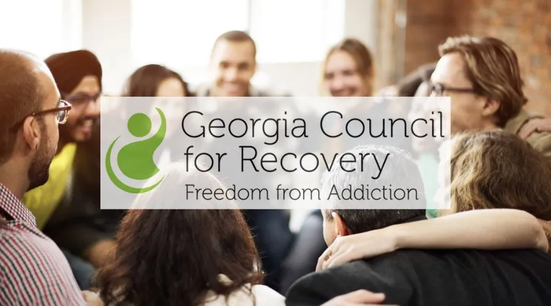

Georgia's Poison Center reports four deaths and 315 kratom-related calls in 2026. WSB-TV says prohibited synthetic kratom products are still being sold in gas stations and smoke shops. Three years earlier, Rep. Rick Townsend tried to schedule kratom's principal alkaloids. His original ban became a regulatory compromise. Now Georgia is confronting the enforcement questions he raised.
WSB-TV's October 14 figures describe kratom-related calls and deaths, including concerns about synthetic products. They do not establish that all four deaths involved synthetic compounds alone or were caused by kratom alone.
What WSB-TV Reported
In an October 14 report, WSB-TV's Tom Regan interviewed Dr. Gaylord Lopez, director of the Georgia Poison Center. Lopez reported 315 calls and four deaths so far in 2026. He said roughly eight of every ten calls involved hospitalization of an overdose patient and warned of neurological and respiratory effects, including the possibility of breathing stopping.
Lopez also described synthetic kratom products as substantially more potent than ordinary kratom. WSB-TV reported that prohibited synthetic products remain available at gas stations and smoke shops, citing weak enforcement and the profits associated with the market.
The report also discussed two Ole Miss student deaths, including Atlanta student Robert Strand. Those Mississippi deaths should not be counted as part of the four Georgia deaths without evidence that the Poison Center included them.
Townsend's Warning Came Before the Latest Deaths
Rep. Rick Townsend originally introduced HB 181 in 2023 to place mitragynine and hydroxymitragynine into Schedule I. In contemporary interviews, he described concerns raised by families, severe adverse outcomes and the limitations of relying on product standards.
He wanted a broader prohibition. That is not what Georgia ultimately enacted. After opposition and legislative negotiations, the final 2024 law strengthened age, labeling and composition requirements while allowing qualifying kratom products to remain on sale.
Who Opposed the Original Schedule I Proposal?
The American Kratom Association argued against banning kratom generally and supported an approach focused on product standards. The Georgia Council for Recovery said it initially opposed HB 181 because Schedule I treatment would criminalize possession, including among people using kratom for pain or opioid withdrawal.

Those organizations argued that prohibition would impose costs on people who used kratom for symptom relief or harm reduction. The resulting law reflected a different policy choice from Townsend's initial proposal. Townsend himself ultimately supported the amended measure, so the final compromise should not be presented as something imposed entirely without his agreement.
Georgia Passed a Law. Who Tested the Products?
Georgia's amended HB 181 imposed stronger restrictions, including an age limit of 21, controls on product composition and restrictions on synthetic alkaloids. But a chemical prohibition is only as effective as the ability to sample, test and enforce it.
An August 2026 Georgia Public Broadcasting and The Current investigation reported misleading product labels, gaps in laboratory testing and the absence of a dedicated, funded statewide testing system. Officers contacted in six coastal counties said they were not proactively enforcing kratom laws.
That reporting makes the October WSB-TV findings especially consequential: the law may prohibit a compound, but a retailer can still offer a product until authorities identify it and take action.
Townsend Is Asking Questions Again
Townsend now chairs the House Blue-Ribbon Study Committee on Youth Exposure to Kratom and Retail-Available Substances. The committee met again on October 9, 2026, to hear from public-health experts, law enforcement, industry representatives and affected families.
The Legislature is again considering how to address the market that its earlier law left in place.
Five Questions Georgia Should Answer
1. How many gas stations and smoke shops have been inspected since the strengthened KCPA took effect?
2. How many products have been tested for prohibited synthetic alkaloids or unlawful concentrations?
3. How many violations resulted in seizures, penalties or prosecutions?
4. Which agencies are funded and responsible for routine retail enforcement?
5. If the state cannot reliably identify prohibited products, should it reconsider the scope of the legal kratom market?
The Warning Was There. The Enforcement Question Remains.
Townsend's original Schedule I proposal did not become law. Georgia instead chose to regulate qualifying kratom products while prohibiting specified formulations and compounds.
Now the Georgia Poison Center is reporting four deaths and 315 calls in 2026, and WSB-TV reports that illegal synthetic kratom products remain in retail commerce. These figures do not, by themselves, prove that Townsend's original bill would have prevented those outcomes. They do demand an accounting of how the law has been enforced.
Reporting and legislative records
Georgia Public Broadcasting / The Current, Aug. 13, 2026 — Potent, mislabeled and easy to buy
Georgia General Assembly — HB 181 legislative history
Georgia Senate Health and Human Services Committee — 2023 HB 181 minutes
Georgia Public Broadcasting, Feb. 17, 2023 — Townsend's proposed ban and warnings
Georgia House release — Townsend's October 2026 study committee meeting
Deaths, calls and hospitalizations are reported figures attributed to Georgia Poison Center director Dr. Gaylord Lopez. The reporting does not identify a specific product or compound in every death. This article distinguishes opposition to the original ban from positions taken on the amended bill.